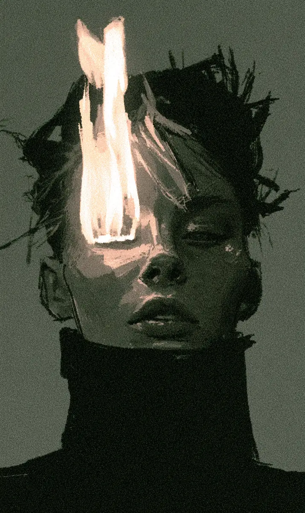

열한 시 사십 분, 보라는 다시 걷고 있었다. 지하철 막차는 이미 끊겼다. 버스도 없었다. 가방 안에는 교복과 칫솔, 그리고 아침에 쓸 지하철 카드가 들어 있었다. 도시는 조용했고, 보라의 발소리만 길게 이어졌다. 아빠 집까지 오십 분. 매일 밤 오십 분. 보라는 잠을 자러 가는 길이었다.
[Eleven forty at night, and Bora was walking again. The last train was already gone. There were no buses either. In her bag were her school uniform, a toothbrush, and the subway card she would use in the morning. The city was quiet, and only her footsteps went on and on. Fifty minutes to her father’s apartment. Fifty minutes, every night. She was walking there in order to sleep.]
집마다 불이 하나씩 있다. 아주 작고 하얀 불이다. 낮에는 잘 보이지 않지만, 밤이 되면 그 집에서 자는 사람 얼굴 위로 조용히 내려앉는다. 사람들은 그 불빛 아래에서 잠이 든다. 불이 없으면 잠이 오지 않는다. 며칠은 참을 수 있다. 한 달이 되면 몸이 아프기 시작한다. 그것이 규칙이었다.
[Every home has one flame. It is very small and white. In the daytime you can hardly see it, but at night it settles quietly onto the face of whoever sleeps in that house. People fall asleep under that light. Without a flame, sleep does not come. You can stand it for a few days. After a month your body starts to break down. That was the rule.]
보라는 아기 때부터 불을 좋아했다. 엄마가 안아 주어도 울고 아빠가 노래를 불러 주어도 울었는데, 불빛이 얼굴에 닿으면 바로 조용해졌다. 그래서 엄마는 보라를 불이라고 불렀다. 아빠도 그렇게 불렀다. 열다섯 살이 된 지금도 두 사람은 가끔 그 이름을 쓴다. 이제는 서로 다른 집에서, 서로 다른 밤에.
[Bora loved the flame from the time she was a baby. She cried when her mother held her and she cried when her father sang to her, but the moment the light touched her face she went quiet. So her mother called her Little Fire. Her father called her that too. Even now, at fifteen, the two of them still use that name sometimes. From separate homes now, on separate nights.]
작년 봄에 부모님은 이혼했다. 법원은 모든 것을 반으로 나누었다. 아파트를 팔아서 돈을 나누었고, 차는 아빠가 가지고, 적금은 엄마가 가졌다. 판사는 목록을 하나씩 읽었다. 마지막에 집불이 남았다. 불은 반으로 자를 수 없다. 판사는 잠깐 조용히 있다가 아빠 쪽을 보고 말했다. 불은 아버지에게.
[Last spring her parents divorced. The court divided everything in half. They sold the apartment and split the money, her father took the car, her mother took the savings. The judge read the list item by item. At the end, the house flame was left. A flame cannot be cut in half. The judge was quiet for a moment, then looked toward her father and spoke. The flame goes to the father.]
아빠는 웃지 않았다. 아빠가 원한 것은 불이 아니었다. 보라는 그날 아빠 얼굴을 똑바로 보지 못했다.
[Her father did not smile. The flame was not what he had wanted. Bora could not look straight at his face that day.]
보라는 엄마와 살기로 했다. 그건 보라가 직접 고른 것이었다. 엄마는 혼자였고 아빠는 강한 사람처럼 보였기 때문이다. 열다섯 살은 그런 계산을 한다. 아무도 불에 대해서는 묻지 않았다.
[Bora decided to live with her mother. That part she chose herself, because her mother was alone and her father looked like the stronger one. A fifteen year old does that kind of arithmetic. Nobody asked her about the flame.]
첫날 밤에 보라는 잠을 자지 못했다. 둘째 날도, 셋째 날도 그랬다. 눈을 감으면 천장이 너무 가까웠고, 몸이 계속 뜨거워졌다가 식었다. 일주일이 지나자 손이 떨렸다. 나흘째 되는 날 밤에 보라는 조용히 신발을 신고 집을 나왔다. 그리고 도시를 가로질러 걸었다. 아빠 집 앞에 도착했을 때는 새벽 한 시였다. 문은 잠겨 있지 않았다. 아빠는 보라가 올 것을 알고 있었다.
[The first night, Bora could not sleep. The second night was the same, and the third. When she closed her eyes the ceiling felt too close, and her body kept going hot and then cold. After a week her hands shook. On the fourth night she quietly put on her shoes and left. Then she walked all the way across the city. It was one in the morning when she reached her father’s building. The door was not locked. He had known she would come.]
아빠는 자고 있는 척했다. 보라도 아는 척하지 않았다. 말을 하면 둘 다 울 것 같았다. 보라는 거실 바닥에 누웠고, 불은 안방에서 천천히 나와 보라의 이마 위에 앉았다. 십 분도 안 되어 보라는 잠이 들었다. 그날부터 아빠는 안방 문을 열어 두고 잤다. 거실에는 이불이 한 채 더 생겼다. 아무도 그 이불 이야기를 하지 않았다.
[Her father pretended to be asleep. Bora pretended not to notice. If either of them spoke, they would both cry. She lay down on the living room floor, and the flame came slowly out of his bedroom and settled on her forehead. In less than ten minutes she was asleep. From that day on, her father slept with his bedroom door open. A second blanket appeared in the living room. Nobody said anything about the blanket.]
그렇게 일 년이 지났다.
[A year passed like that.]
겨울에는 손가락이 아팠고, 여름에는 셔츠가 젖었다. 비 오는 밤에는 우산을 쓰고 걸었다. 보라는 그 길에 있는 편의점을 전부 알게 되었고, 어느 골목에 개가 있는지도 알게 되었다. 학교에서는 자주 졸았다. 선생님이 물어보면 그냥 늦게 잔다고 대답했다. 거짓말은 아니었다. 친구들은 보라가 왜 밤마다 사라지는지 몰랐고, 보라는 설명하고 싶지 않았다.
[In winter her fingers hurt, and in summer her shirt got wet. On rainy nights she walked under an umbrella. She came to know every convenience store on that route, and which alley had the dog. At school she dozed off often. When a teacher asked, she said she just went to bed late. It was not a lie. Her friends did not know why she disappeared every night, and she did not want to explain.]
어느 날부터 현관 옆 신발장 위에 빵이 하나씩 놓여 있었다. 보라가 새벽에 나갈 때 가져가라고 놓아 둔 것이었다. 아빠는 그 이야기를 한 번도 하지 않았고, 보라도 고맙다고 말하지 않았다. 두 사람은 그런 식으로만 이야기했다. 빵, 이불, 열어 둔 문. 그게 아빠의 말이었다.
[One day a piece of bread began appearing on the shoe cabinet by the door. It was put there for her to take when she left before dawn. Her father never once mentioned it, and Bora never said thank you. That was the only way the two of them talked. Bread, a blanket, an open door. That was his way of speaking.]
보라는 항상 해가 뜨기 전에 나왔다. 엄마가 깨기 전에 돌아가야 했기 때문이다. 엄마는 아무것도 모른다고 보라는 믿었다. 그런데 어느 날 아침, 골목을 돌자 엄마 방 창문에 불빛이 보였다. 다음 날 아침에도 보였다. 그다음 날 아침에도 보였다. 매일 아침 켜져 있었다.
[Bora always left before sunrise. She had to get back before her mother woke up. Bora believed her mother knew nothing. But one morning, as she turned into the alley, she saw a light in her mother’s window. She saw it the next morning too. And the morning after that. It was on every single morning.]
보라는 계단을 천천히 올라갔다. 현관문은 그날도 잠겨 있지 않았다. 사실 그 문은 일 년 동안 한 번도 잠겨 있지 않았다. 엄마는 부엌 의자에 앉아서 두 손으로 컵을 잡고 있었다. 창밖은 아직 어두웠다. 엄마 얼굴 위에는 아무것도 없었다. 불빛도, 잠도 없었다.
[Bora climbed the stairs slowly. The front door was unlocked that day too. In fact that door had not been locked once in a whole year. Her mother was sitting on a kitchen chair, holding a cup with both hands. Outside the window it was still dark. There was nothing on her mother’s face. No light, and no sleep.]
엄마가 컵을 내려놓고 조용히 물었다. “빵은 맛있었어?” 보라는 대답하지 못했다. 엄마는 일어나서 보라의 젖은 외투를 받아 걸었다. “다음부터는 큰 우산 가지고 가.” 그 말을 하는 동안 엄마는 보라 얼굴을 보지 않았다.
[Her mother set down the cup and asked quietly, “Was the bread good?” Bora could not answer. Her mother stood up, took her wet coat, and hung it. “Take the big umbrella next time.” She did not look at Bora’s face while she said it.]
엄마는 일 년 동안 한 번도 자지 못했다. 그리고 일 년 동안 한 번도 문을 잠그지 않았다.
[Her mother had not slept once in a year. And in that whole year she had never once locked the door.]